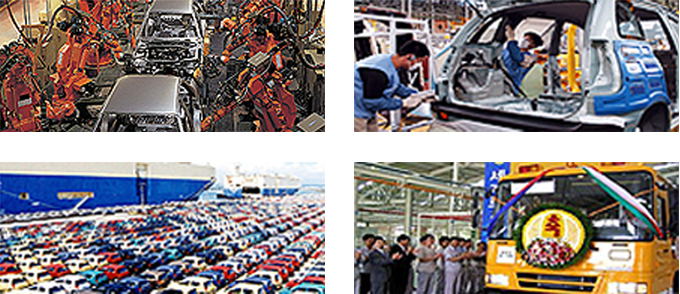
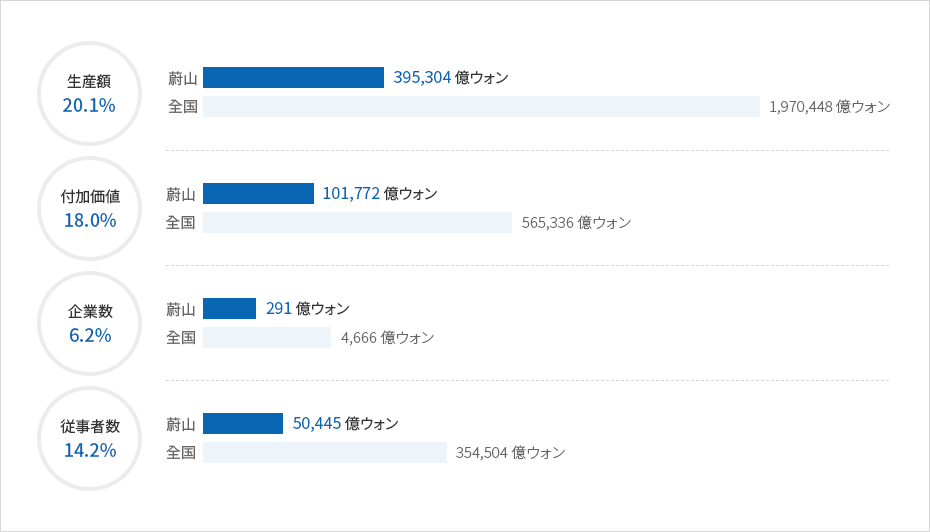

自動車産業
- Home
- 主要産業
- 自動車産業
自動車産業
単一自動車工場で、世界最大の年産155万台規模の現代自動車(株)、バス生産専門企業の大宇バス(株)等蔚山に 位置する260余りの自動車関連企業で年間360億ドル以上を生産しています。 大韓民国自動車生産高の21%以 上を占め、年間205億ドルを輸出し世界5大自動車産業都市として成長しました。
また、2016年にオープンしたグリーンカー技術センターは、電気自動車、ハイブリッド自動車、水素燃料電池自動車等エコカー開発を本格化し蔚山を電気自動車産業の中心基地として育成しています。
特に2009年大韓民国初のハイブリッド自動車量産、2013年に世界初の水素燃料電池自動車を商用化し、デンマ ーク等欧州地域に輸出する等技術集約型の自動車生産のトップランナーとして成長しています。


蔚山の自動車産業の現況(2012年)


생산액(20.1%) - 울산(395,304억원), 전국(1,970,448억원)
부가가치(18.0%) - 울산(101,772억원), 전국(565,336억원)
사업체수(6.2%) - 울산(291억원), 전국(4,666억원)
종사자수(14.2%) - 울산(50,445억원), 전국(354,504억원)

蔚山の完成車生産メーカの現況
現代自動車蔚山工場
- 工場規模 : 敷地5, 050千㎡, 建坪2,314千㎡
- 従業員数 : 35,000名
- 生産能力 : 5,400台/日
- 生産量 : 139万台 / 年
デウバス
- 工場規模 : 73,847㎡
- 生産能力 : 10,000台/1年
- 従業員数 : 930名